Python Synthesizer
Experimental real-time synth, with midi support
As a project with friends, we implemented a working synthesizer taking input from a MIDI source and converting it into an audio signal.
The main challenge was to compute in real-time the audio stream in a high-level language such as Python, which led to many surprises regarding optimizations.

The key features are the following :
- Simple UI, showing the signal produced in real-time
- Inputs can be a real-time MIDI device or a specified MIDI file to play
- All the audio primitives (oscillators, filters, ADSR, etc.) are divided into modules that serve as "build-block" for the audio pipeline
- The whole audio pipeline is described in a single file (using the modules), such files can be loaded as plugins
- Filters applied on MIDI notes are supported, such as arpeggiators
- The temperament can be chosen from Equal, Pythagorean or Just